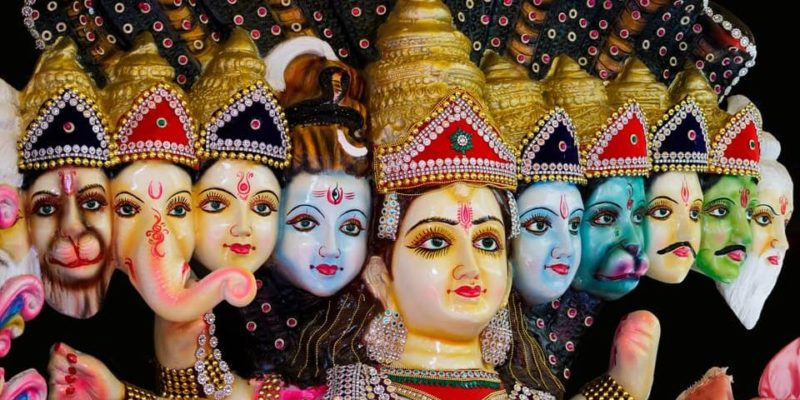

| Religiones Panteistas |
| Inicio | Religiones Monoteistas | Religiones Politeistas | Religiones Panteistas | No Teistas | Cristianismo | Islam | Hinduismo | Religion China | Budismo |
El panteísmo
El panteísmo es una concepción del mundo y una doctrina filosófica según la cual el universo, la naturaleza y la deidad que los monoteístas llaman Dios son equivalentes.1 El panteísmo no estipula a un ente como Dios, sino que La ley natural, la existencia y el universo (la suma de todo lo que fue, es y será) se representa por medio del concepto teológico de lo que las religiones llaman «Dios».
La palabra está compuesta del término griego πᾶν (pan), 'todo', y θεός (theos), 'Dios'.1 La primera vez que el término aparece en latín es en la obra de 1697 escrita por Joseph Raphson titulada De Spatio Reali seu Ente Infinito.
Algunos pensadores han considerado panteísta el trasfondo de los politeísmos.2 La visión panteísta, si es admitida, aporta un nexo entre diferentes religiones, en especial las no creacionistas.
De manera general, el panteísmo puede ser considerado como una ideología filosófica o como una concepción del mundo. En el teísmo se enfrentan dos términos: «dios» y «mundo». El panteísmo procede a identificarlos; el resultado ha de ser un monismo, que puede adoptar diversas caracterizaciones.
El panteísmo puede mostrar variantes. Por un lado, puede considerar a la realidad divina como la única realidad verdadera y a ella se reduce el mundo; en este caso, el mundo es concebido como proceso, emanación, desarrollo o manifestación de Dios; declaradamente una «teofanía». Por otro lado, la naturaleza puede ser concebida como la única realidad verdadera; a esa realidad se reduce Dios, que suele ser concebido entonces como la unidad del mundo, como una especie de principio orgánico de la naturaleza, o también, como autoconciencia del universo; esta forma de panteísmo recibe la denominación de «panteísmo ateo» o «panteísmo naturalista».
En ambas variantes, no hay ninguna realidad trascendente. Todo lo que existe es inmanente y la divinidad es entendida más bien como «principio del mundo»; el cual se puede presentar con un principio de no dualidad o dualidad entre «Dios» y el mundo y/ o ser humano, dependiendo de la doctrina panteista.
El panteísmo es una doctrina o un componente identificable en las doctrinas del filósofo griego Heráclito, en los fragmentos que de él se conservan. Según el filósofo presocrático del devenir, lo divino se halla presente en la totalidad de las cosas3 y, al mismo tiempo, es idéntico al mundo y a los entes en su integridad. Esta concepción arrastra a parangonar lo divino con el Universo, transformándolo en el "fuego generador" que unifica todos los contrarios.
Ese dios-todo de Heráclito congrega en sí mismo la totalidad de las cosas y es, de igual manera, una realidad de carácter eterno. Su cosmología parece, también, referirse a la teoría de un mundo de movimiento cíclico, en virtud de la cual el todo se asemeja a un conjunto de fases alternadas: una suerte de ciclo destructivo y productivo, que más tarde ha de ser retomado y desarrollado por los estoicos.
Se ha hablado frecuentemente -y acaso de modo impropio- del panteísmo de Plotino. En realidad, para él la divinidad conserva para sí los dos caracteres, la inmanencia y la trascendencia. El dios plotiniano, penetrando todas las realidades, se encuentra por encima de todas ellas. Así, el filósofo sostiene con claridad que lo Uno, "en cuanto principio del todo, no es el todo". Una tal afirmación pareciera oponerse a las apreciaciones o interpretaciones inmanentistas y panteístas, de su pensamiento.
La cosmovisión de Giordano Bruno bien puede ser entendida como un "panteísmo ateo", con ciertos rasgos específicos de "pan -psiquismo".En su obra De la causa, el principio y el Uno es donde se encuentran sus ideas fundamentales sobre la realidad natural.
Una forma o esquema general del universo es la denominada "alma del mundo", cuya preponderante facultad es un intelecto completo y universal, que todo lo llena y todo lo ilumina.
La materia constituye el segundo principio de la naturaleza, por la cual la totalidad de las cosas se hallan conformadas. Los aspectos de los entes pueden mudar, variar o divergir, pero es siempre la misma materia la que se sostiene y perdura por debajo de las exteriores transformaciones.
Ha sido usual en la época moderna considerar la filosofía de Baruch Spinoza como el más eminente y radical ejemplo de panteísmo, constituyendo de esa forma, el modelo de todos los panteísmos que le seguirán. Esto se debe principalmente a sus afirmaciones sobre el monismo de la sustancia y del estatuto modal de los individuos finitos, en especial el hombre: «Todo cuanto es, es en Dios, y sin Dios nada puede ser ni concebirse» (Ética, I, XV). El spinozismo, sin embargo, debe ser considerado más bien como un panenteísmo, porque para el filósofo neerlandés todo está en Dios y el Ser supremo no se confunde ni con el mundo ni con la totalidad de sus modos, al conservar Spinoza la distinción de orden escolástico entre natura naturans (Dios como principio de ser y de su vida irreductible a todo viviente particular) y la natura naturata, conjunto de modos infinitos y finitos. Estando constituido Dios por una infinidad de atributos de los que sólo conocemos dos (el pensamiento y la extensión), la metafísica spinoziana no puede interpretarse ni como un panteísmo materialista ni como un panteísmo espiritualista, dado que en ella se dice es tanto res extensa como res cogitans. El panteísmo de Spinoza ha sido objeto de numerosas críticas; una de las más destacadas es la de Schelling que, según algún estudioso del tema, considera que Spinoza «anula la libertad y la personalidad de Dios reduciéndolo a un mero objeto incapaz de relacionarse con el mundo».
Lo cierto es que han surgido panteístas en la Historia del pensamiento filosófico y teológico, tal vez por el atractivo metafísico que lo divino ejerce en el hombre. Entre los antiguos pensadores con resabios panteístas se pueden citar también al judío Filón de Alejandría (25 a. C.- 50 d. C.), y a Amonio Sacas (175 d. C.-242 d. C.).
Desde la perspectiva new age se han identificado erróneamente como panteístas a muchos pensadores de diversas religiones en un esfuerzo por dar validez o renombre a sus teorías. Entrada la Edad Media, figuras como Escoto Eriúgena (810-877), Bernardo de Tours (+ 1150) y, sobre todo, Eckhart de Hochheim (1260-1327) vieron la sustancia divina en los seres del mundo, pero esto no es panteísmo, ya que son ideas que aparecen en el propio Catecismo. La diferencia es que el cristianismo afirma que todo lo existente, al ser creado por Dios, tiene cierta sustancia o semilla divina pero no es Dios en sí mismo, en cambio el panteísmo afirma que todo es Dios, negando que Dios exista como ente personal con voluntad propia, siendo así una idea contraria. Marcadamente lo fueron también el místico iluminista Antonio Rosmini (1797-1855) y acaso el antropólogo jesuita Pierre Teilhard de Chardin (1881-1955) con sus perspectivas teocósmicas del hombre y de la vida
